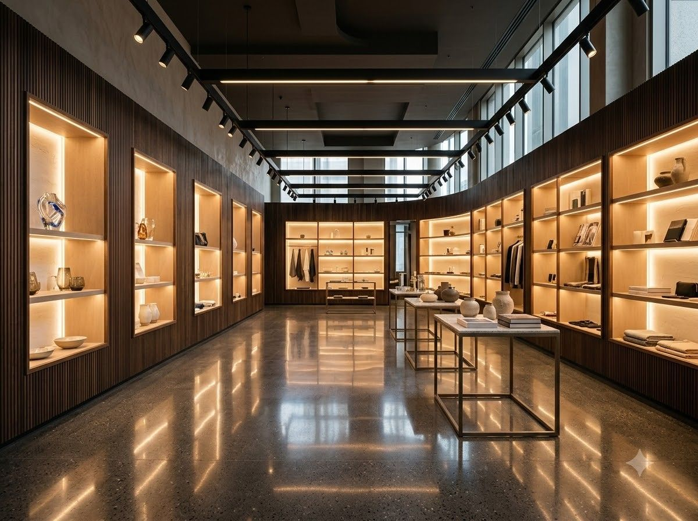
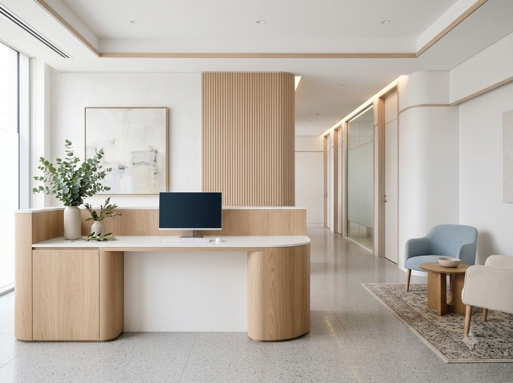

The problem as we found it, what we actually did, and what changed afterwards.
Filter by sector to see work closest to yours.
Residential
Terrace that leaked through two monsoons
Problem — A nine-storey society had paid three contractors to re-coat the same terrace.
Water kept appearing in the top-floor flats.
What we did — Traced the ingress to an untreated parapet-to-slab joint and a blocked
rainwater outlet rather than the membrane itself. Rebuilt the joint, corrected the slope and
re-laid a single continuous system.
Dry through the following monsoon, verified on site
Warranty issued in writing with material specs
Residential
Villa interiors, built to the architect's drawing
Problem — An owner had a complete design set from an external architect and no single
agency willing to execute all of it.
What we did — Took the drawings as issued, ran carpentry, modular units, lighting,
flooring and finishes under one work order, with weekly photo updates to an owner living abroad.
Single point of accountability across nine trades
Snag list closed before final payment
Commercial
Office fit-out around a working floor
Problem — An occupied office needed a full fit-out without losing working days.
What we did — Phased the floor into three zones, ran civil and electrical work in
evening and weekend windows, and handed each zone back before opening the next.
Zero full-day shutdowns for the client's team
Daily dust control and clean-up before office hours
Hospitality
Restaurant renovation on a fixed reopening date
Problem — A fine-dine restaurant had a marketing campaign already booked around a
reopening date that could not move.
What we did — Worked backwards from the date, ordered long-lead finishes first, and
ran kitchen services and front-of-house finishing in parallel crews.
Reopened on the committed date
Kitchen exhaust and wet areas fully re-waterproofed
Industrial
Plant upkeep moved from reactive to scheduled
Problem — A fabrication unit was calling different vendors every time something broke,
with no record of what had been repaired or when.
What we did — Built an asset register, put the building services on a preventive
schedule, and staffed a small resident maintenance team under our supervision.
Breakdown calls replaced by a planned calendar
Service history documented per asset
Industrial
Licences, renewals and a calendar that owns itself
Problem — An MSME kept discovering expired licences only when an inspection or a
tender document asked for them.
What we did — Audited every statutory registration, cleared the lapsed ones, and put
renewals on a tracked calendar with documents held in one place.
No lapsed registrations since handover
Tender paperwork assembled in hours, not weeks

Retail
Four outlets that finally looked like one brand
Problem — A growing retail chain had four outlets built by four different contractors,
with no two storefronts alike.
What we did — Wrote a build and identity standard — signage, lighting levels, finishes
and layout — then retrofitted the three older outlets to match.
One specification for every future outlet
Fit-out cost per outlet reduced by standard BOM

Healthcare
A diagnostic centre that cannot afford downtime
Problem — Power, cooling and water interruptions were disrupting equipment uptime at a
busy diagnostic centre.
What we did — Surveyed the services, corrected the electrical loading, sealed a chronic
wet-wall leak next to an equipment room, and put the site on an AMC with priority response.